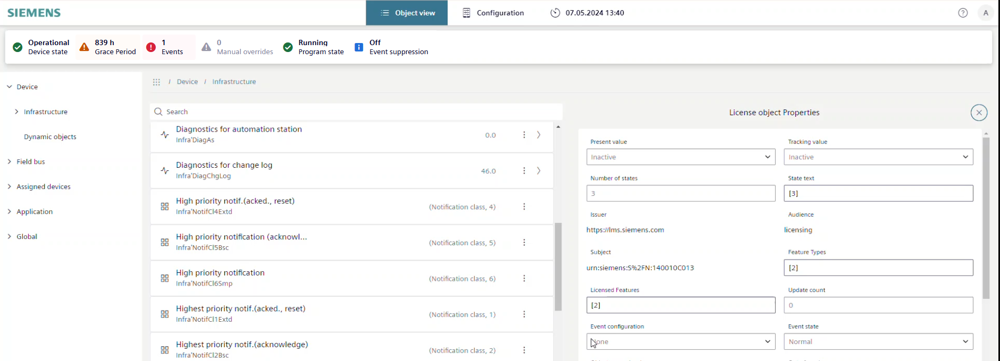
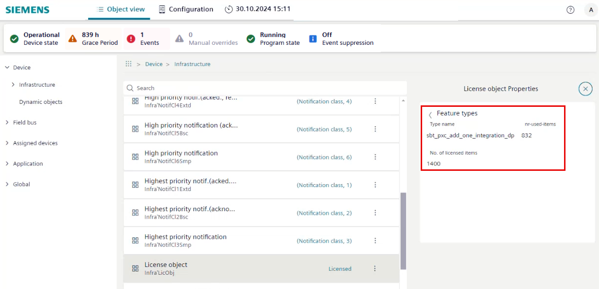

Verifying the used license in the device with the Web interface
- The Web interface of the device is launched.
- The license feature is only supported for PXC5.003.
- Go to the Object view tab.
- Select Device.
- Select Infrastructure > License object.
- The License object shows the status
Licensed. - Select .
- The License object properties dialog area opens.

- Select Feature types > Feature types and select the <x>.
- The Feature types area shows the licenses that are used for this device.
